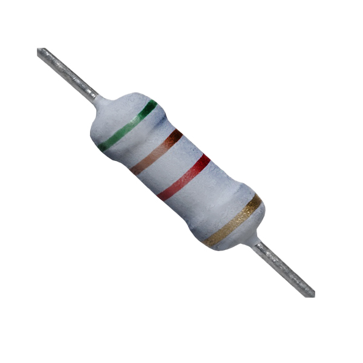
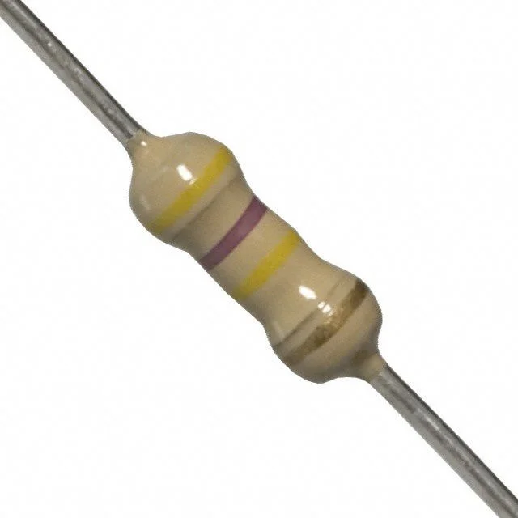
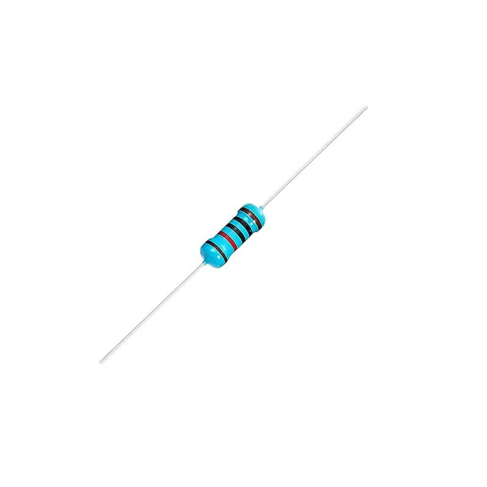
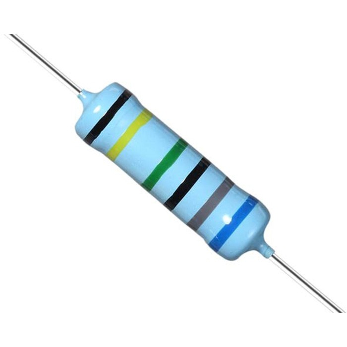
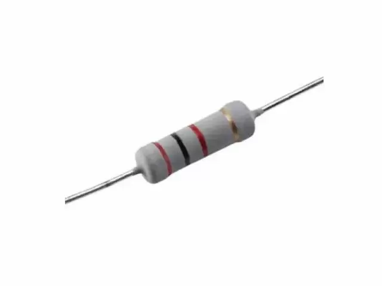

Welcome to ElectroSpecs | Explore Electronics Components | Learn & Build 🚀

GENERAL PURPOSE METAL OXIDE FILM RESISTOR

FLAMEPROOF METAL OXIDE FILM RESISTOR

HIGH SURGE METAL OXIDE FILM RESISTOR

HIGH VOLTAGE METAL OXIDE RESISTOR

PRECISION METAL OXIDE FILM RESISTOR